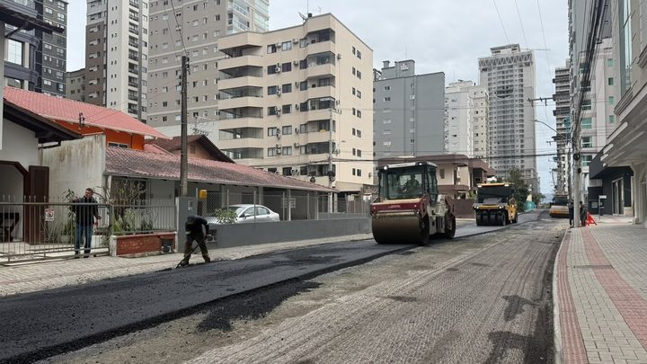
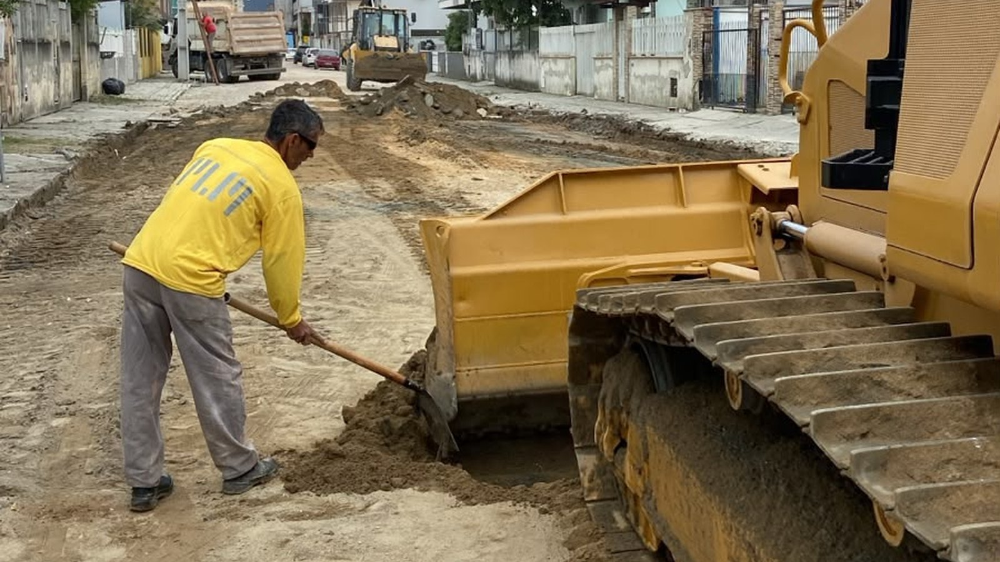
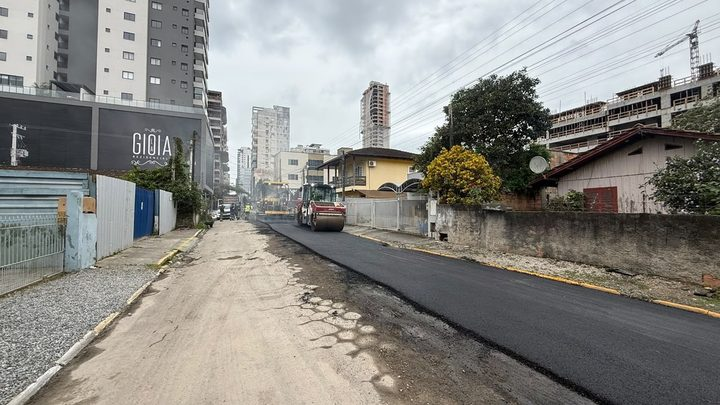
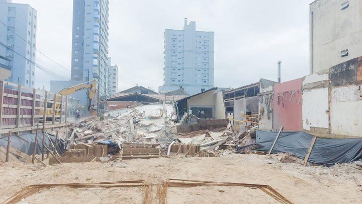

Itapema · InfraestruturaA Rua 282 leva o asfalto do Avança Itapema à Meia Praia pela primeira vez em 2026, e o Morretes ficou com cinco das nove ruas do ano
A nota de setembro que dizia que a pavimentação tinha começado.
A lista de obras do Avança Itapema desta quarta-feira, 21 de outubro, põe a Rua 282 entre as vias em que as equipes estão “na preparação para a pavimentação”. Em 18 de setembro, a mesma Prefeitura publicou que a rua tinha entrado “na etapa de pavimentação”, com drenagem, nivelamento e fresagem concluídos. São 33 dias entre as duas notas, e nenhuma delas diz de qual trecho da rua está falando. Das oito frentes desta semana, seis já tinham aparecido em notas anteriores do programa neste ano.
Em 30 segundos · Modo de Leitura, formato original Santa Informa
A Prefeitura de Itapema publica toda semana a lista de obras do Avança Itapema.
A lista desta quarta, 21 de outubro, tem oito frentes.
A Rua 282 está entre as que estão “na preparação para a pavimentação”.
Em 18 de setembro, a Prefeitura disse outra coisa.
Naquele dia, a nota foi: a Rua 282 “entra na etapa de pavimentação”.
E dizia que drenagem, nivelamento e fresagem estavam concluídos.
Entre uma nota e outra passaram 33 dias.
Nenhuma das duas diz de qual trecho da rua está falando.
A rua é comprida, então pode ser outro pedaço.
Pelas notas não dá para saber.
A Rua 282 aparece em quatro notas do programa desde julho.
A primeira foi em 17 de julho, com obra de drenagem.
São 96 dias da primeira aparição até a desta quarta.
Naquela de julho a rua era do Morretes.
Em setembro virou Meia Praia nas notas.
Das oito frentes desta semana, seis já tinham saído antes.
São as ruas 206, 282, 416, 700B1 e 420, mais o deck da Praia do Centro.
Só duas são novas: drenagem na Rua 129A e deck da Rua 297.
Tem também o caso da Rua 420.
Em 5 de outubro o secretário disse: “Concluímos toda a drenagem”.
Dezesseis dias depois, a 420 está em obra de drenagem de novo.
E a Rua 700B1 está em lajotas desde 16 de setembro.
São 35 dias no mesmo serviço, sem nota dizendo que acabou.
O secretário de Obras é Jean do Idimar.
Não falamos com a Secretaria de Obras para esta matéria.
InfraestruturaPublicada em Redação Santa Informa

A Prefeitura de Itapema publicou nesta quarta-feira, 21 de outubro, a lista semanal de obras do programa Avança Itapema. Nela, a Rua 282 aparece entre as vias em que “as equipes trabalham na preparação para a pavimentação”. Em 18 de setembro, a mesma Prefeitura publicou uma nota com o título “Avança Itapema: Rua 282 entra na etapa de pavimentação”, dizendo que a drenagem, o nivelamento e a fresagem já estavam feitos e que as equipes tinham avançado para a aplicação do pavimento. Entre um texto e outro passaram 33 dias, conta nossa. Nenhuma das duas informa de qual trecho da rua está falando.
A rua aparece em quatro notas desde julho. Em 17 de julho, estava em obra de drenagem pluvial entre a 1ª e a 2ª Avenida, e a nota a situava no bairro Morretes. Em 15 de setembro, a Prefeitura avisou que a via ficaria bloqueada no dia seguinte para nivelamento e pavimentação “em toda a extensão”, e aí o endereço já era Meia Praia. Em 16 de setembro, a lista semanal falava em preparação da rua para receber nova pavimentação. Em 18 de setembro veio a nota do asfalto, que foi a que contamos aqui no dia seguinte. Da primeira aparição até a desta quarta são 96 dias, outra conta nossa.
A nota de 21 de outubro lista oito frentes: preparação para pavimentação nas ruas 206, 282 e 416, pavimentação em lajotas na 700B1, drenagem pluvial nas ruas 420 e 129A, calçada na 420, manutenção do deck na altura da Rua 297 e troca de deck por paver na Praia do Centro. Seis delas já tinham saído em notas anteriores do mesmo programa neste ano: as ruas 206, 282, 416, 700B1 e 420, mais o deck da Praia do Centro, cuja retirada a Prefeitura anunciou em 16 de setembro. Novas na lista são a drenagem da Rua 129A e a manutenção do deck da Rua 297. A contagem é nossa.
Em 5 de outubro, ao anunciar o asfalto em trechos das ruas 420 e 422, o secretário de Obras e Serviços Públicos, Jean Idimar, afirmou: “Concluímos toda a drenagem e agora avançamos com a pavimentação asfáltica”. Dezesseis dias depois, a nota desta quarta põe a Rua 420 de novo em obra de drenagem pluvial. Como nenhum dos dois textos informa o trecho, não dá para saber se é outro pedaço da mesma rua. A Rua 700B1 repete do mesmo jeito: estava em pavimentação com lajotas em 16 de setembro e segue em pavimentação com lajotas 35 dias depois, sem que nenhuma nota no meio tenha dito que o serviço terminou.
Não falamos com a Secretaria de Obras e Serviços Públicos para esta matéria. O espaço segue aberto.
O resumo de 30 segundos está no topo e a versão completa é o texto acima. Aqui ficam as três leituras da casa sobre o mesmo assunto.
Clara, a otimista
Repare numa coisa boa: a Prefeitura publica essa lista toda semana, com nome de rua e tipo de serviço. É por isso que esta matéria existe. Cidade que não publica nada deixa o morador adivinhar se a máquina que passou na esquina era da Prefeitura ou de obra particular. Aqui dá para abrir o site e ver.
E as oito frentes são oito mesmo. Tem rua em preparação, tem rua recebendo lajota, tem drenagem, tem calçada e tem deck da orla sendo trocado antes da temporada. Com o verão chegando, obra de orla terminada em novembro vale mais do que obra começada em janeiro.
Seu Prudêncio, o criterioso
Merece atenção a falta do trecho. Em Itapema, uma rua numerada atravessa quarteirões e quarteirões, e dizer “Rua 420” sem dizer entre quais esquinas é informação que não ajuda ninguém a se programar. A nota de 17 de julho fazia isso direito: dizia Rua 282 entre a 1ª e a 2ª Avenida, Rua 420 entre as 430A e 430B, Rua 416 entre as 406C e 406E. A de 21 de outubro só dá o número. Voltar ao padrão de julho resolveria metade das dúvidas desta matéria.
Vale acompanhar também o encerramento de cada frente. O programa avisa quando começa e quando chega ao asfalto, e não avisa quando entrega. É por isso que a Rua 700B1 aparece há 35 dias em lajota sem que dê para saber se está atrasada ou no prazo. Uma sugestão útil seria publicar, junto da lista semanal, uma linha com as frentes concluídas na semana anterior. Custa pouco e fecha o ciclo.
Dito isso, o conjunto funciona. Existe lista semanal, existe nome do secretário respondendo, existe foto da obra e existe sequência publicada desde fevereiro que permitiu montar esta comparação sem pedir nada a ninguém. Transparência que deixa o próprio texto ser conferido depois é transparência de verdade, e é justamente ela que torna possível cobrar o trecho que falta.
Caco, o sarcástico
A Rua 282 entrou na pavimentação em 18 de setembro. Em 21 de outubro ela está se preparando para a pavimentação. É a rua mais bem preparada do litoral catarinense. Já pode dar aula de preparação para as outras.
Reclamação registrada: “Concluímos toda a drenagem”, disse o secretário sobre a Rua 420 no dia 5. Dia 21 a drenagem voltou. Deve ter ficado com saudade.
Mas tá bom porque, veja, a Prefeitura conta. Publica a rua, publica o serviço, publica a foto com o trator. Em muita cidade por aí o morador descobre que a obra existiu quando pisa no buraco. Aqui ele descobre pelo site e ainda pode conferir a data.
Fontes: As oito frentes de 21 de outubro de 2026, a preparação para pavimentação nas ruas 206, 282 e 416, a pavimentação em lajotas na 700B1, a drenagem nas ruas 420 e 129A, a calçada na 420, a manutenção do deck na altura da Rua 297 e a troca de deck por paver na Praia do Centro estão na nota Avança Itapema: obras de pavimentação, drenagem e melhorias na orla seguem em diferentes pontos da cidade, da Prefeitura de Itapema, aberta e lida por nós em 21 de outubro de 2026, de onde também veio a foto de topo. A frase “entra na etapa de pavimentação” e a conclusão de drenagem, nivelamento e fresagem estão na nota Avança Itapema: Rua 282 entra na etapa de pavimentação, de 18 de setembro de 2026. A preparação da Rua 282, a drenagem nas ruas 206, 416 e 420, a pavimentação em lajotas da Rua 700B1 e o início da retirada do deck de madeira na Orla do Centro estão na nota Avança Itapema mantém frentes de obras em diferentes regiões da cidade, de 16 de setembro de 2026. O bloqueio da via para nivelamento e pavimentação “em toda a extensão” está na nota Rua 282 será bloqueada nesta quarta-feira (16) para serviços de pavimentação, de 15 de setembro de 2026. A drenagem da Rua 282 entre a 1ª e a 2ª Avenida, no bairro Morretes, e as calçadas das ruas 420 e 416 com os trechos informados estão na nota Novas frentes de trabalho do Avança Itapema reforçam melhorias em infraestrutura em diversos bairros, de 17 de julho de 2026. A frase “Concluímos toda a drenagem e agora avançamos com a pavimentação asfáltica” está na nota Avança Itapema: trechos das ruas 420 e 422 recebem pavimentação asfáltica, de 5 de outubro de 2026. A pavimentação de um trecho da Rua 420 em agosto está na nota Avança Itapema: trecho da Rua 420 recebe pavimentação asfáltica, de 25 de agosto de 2026. A cobertura da pavimentação de setembro é nossa, em A Rua 282 leva o asfalto do Avança Itapema à Meia Praia pela primeira vez em 2026, de 19 de setembro de 2026. Os 33 dias, os 96 dias, os 16 dias, os 35 dias e a contagem de seis frentes repetidas em oito são contas nossas sobre as datas e os nomes de rua dessas notas.

Itapema · InfraestruturaA nota de setembro que dizia que a pavimentação tinha começado.

Itapema · InfraestruturaA outra rua da Meia Praia que o programa asfaltou em setembro.

Itapema · InfraestruturaOutra rua da Meia Praia que virou assunto de obra em outubro.